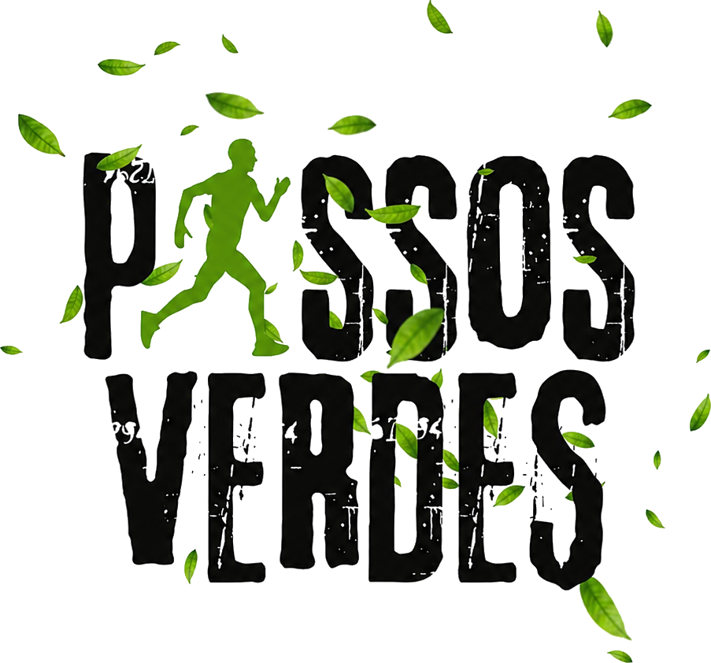

Coração mais forte
30 minutos de corrida por semana já reduzem em até 30% o risco de doenças cardiovasculares. Seu coração bombeia melhor, sua pressão estabiliza.

PassosVerdes17% concluído
Sem cobranças irreais, sem pressa. Uma comunidade que entende o seu ritmo e não te deixa desistir no meio do caminho.
Mais de 1.000 alunos transformados.
Próximo passo
Seu plano está sendo montado pelo nosso time. Enquanto isso, escolha o nível de acompanhamento que combina com você — é o próximo passo pra começar de verdade.
Ver os planos →Vamos te chamar no WhatsApp em até 24h.
"Será que eu consigo?"
Essa é a frase que mais ouvimos de quem chega até nós. E a resposta é sim.
Sabemos como é o ciclo: você decide que vai mudar de vida, paga meses adiantados de uma academia que não gosta, vai por duas semanas, sente dores, se desmotiva e desiste. A culpa não é sua. O método tradicional não foi feito para quem está começando.
Trabalhar o dia todo sentado drena sua energia vital. O sedentarismo não te faz descansar, ele te deixa mais exausto.
Dores nas costas, má postura, joelhos estalando. O corpo humano foi desenhado para o movimento.
A corrida não é apenas sobre o corpo, é a melhor válvula de escape para o estresse do dia a dia.
O sedentarismo é o cigarro silencioso do nosso tempo. Mata devagar, piora o humor, rouba a disposição. A boa notícia: o antídoto é barato, está debaixo dos seus pés, e você pode começar amanhã de manhã. A ciência da corrida é simples — quem corre, vive melhor.
30 minutos de corrida por semana já reduzem em até 30% o risco de doenças cardiovasculares. Seu coração bombeia melhor, sua pressão estabiliza.
Correr é uma das atividades que mais gasta calorias por minuto. Com constância, vem a perda de peso saudável — sem dietas malucas.
A corrida libera endorfina e serotonina. Estudos mostram redução de até 47% nos sintomas de ansiedade e depressão em quem corre regularmente.
Quem corre dorme melhor e acorda mais disposto. O corpo cansado bem é o corpo que descansa de verdade.
Cada quilômetro vencido é uma prova pra você mesmo de que você consegue. Essa sensação não cabe em nenhuma promoção de academia.
A prática regular de exercícios aeróbicos fortalece o sistema imunológico, reduz inflamações e te deixa menos vulnerável a doenças.
O dado que ninguém te conta
Fonte: estudos do British Journal of Sports Medicine. Não é sobre virar atleta. É sobre dar ao seu corpo o que ele foi feito pra fazer: se mover. A Passos Verdes existe pra te levar por essa transformação, no seu ritmo, com gente do seu lado.
Esqueça aquele professor que grita no seu ouvido. Nosso método respeita o seu tempo e adapta-se à sua realidade.
Começamos devagar. Uma mistura de caminhada leve e trotes curtos. Seu coração e pulmões começam a entender a nova rotina sem sofrimento exagerado.
Os intervalos de corrida aumentam, a caminhada diminui. Você percebe que não está tão ofegante quanto antes. A endorfina começa a agir.
Neste ponto, correr já se tornou um hábito. Você já consegue manter um trote contínuo por mais tempo e seu corpo pede pelo treino.
O corpo e a mente estão alinhados. O que antes parecia impossível acontece: você conclui seus primeiros 5km contínuos com um sorriso no rosto.
A Passos Verdes é uma comunidade 100% online, mas com calor humano. Conectamos pessoas do Brasil inteiro que compartilham das mesmas dores e das mesmas vitórias.
Não importa de qual cidade você é. A assessoria vai com você no celular para o parque, rua ou esteira.
Ranking semanal amigável. Atingiu a meta? Subiu de nível? Você ganha reconhecimento no grupo e concorre a mimos reais.
Concluiu os 5km? Ótimo! No próximo mês vamos focar em melhorar seu tempo, perder peso ou buscar os 10km. A jornada não para.
Thiago Treinador
Time, bora pra rua! Quem já fez o treino de hoje manda a foto! 🏃♂️💚
Camila (São Paulo)
Feitooo! Primeira vez que corro 3km sem parar. Não tô acreditando!
Escolha o plano que melhor se adapta ao seu momento e comprometa-se com a sua transformação.
Para quem quer dar o primeiro passo
O plano mais escolhido pelos alunos
Acompanhamento de elite, 1 para 1
* A Comunidade Passos Verdes possui plano anual com desconto. Consulte as opções com nosso time.
Ainda está inseguro? Respondemos as perguntas mais comuns.
Daqui a 8 semanas você pode continuar cansando ao subir a escada, ou pode estar cruzando a linha de chegada dos seus primeiros 5km. A escolha começa agora.
Próximo passo
Já temos suas respostas. Agora é só escolher o nível de acompanhamento — entre na comunidade hoje mesmo e receba sua primeira planilha em até 24h.
Escolher meu plano →Vamos te chamar no WhatsApp em até 24h.